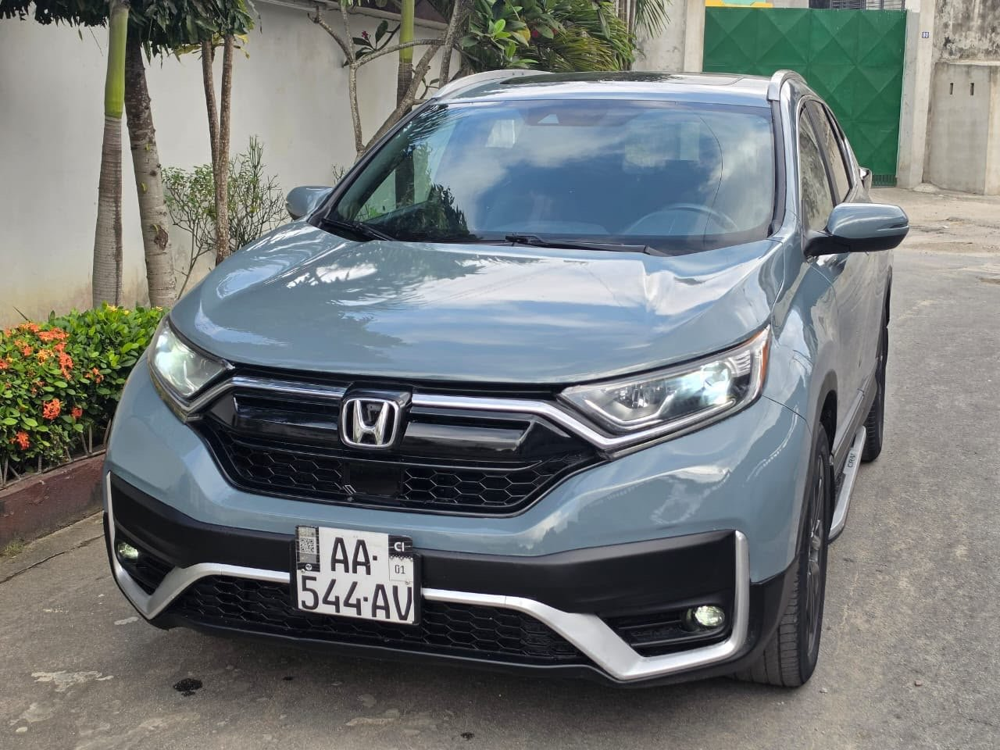

À vendre
Honda CR-V — 2020
2020 · Essence · Automatique · 70 000 km
13 800 000 FCFA
Position : Cocody.
Année annoncée2020
Kilométrage70 000 km
CarburantEssence
BoîteAutomatique
Cylindres4
ToitPanoramique
IntérieurCuir propre
PositionCocody
VolantMultifonctions
Écran à bordGrand écran
DémarrageStart/Stop
Caméra de reculOui
ClimatisationD’origine
JantesAlliage
DocumentsÀ jour
Full options : toit panoramique, volant multifonctions, grand écran à bord, caméra de recul, démarrage Start/Stop et climatisation d’origine. Intérieur cuir propre et documents à jour.